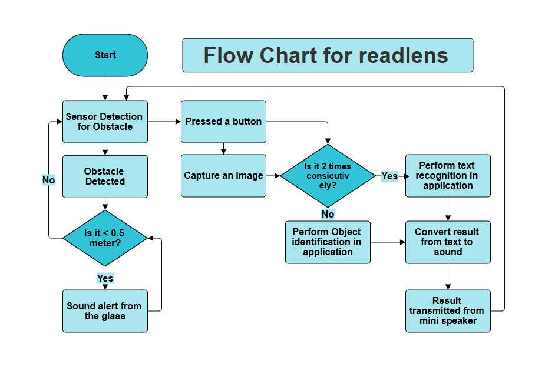
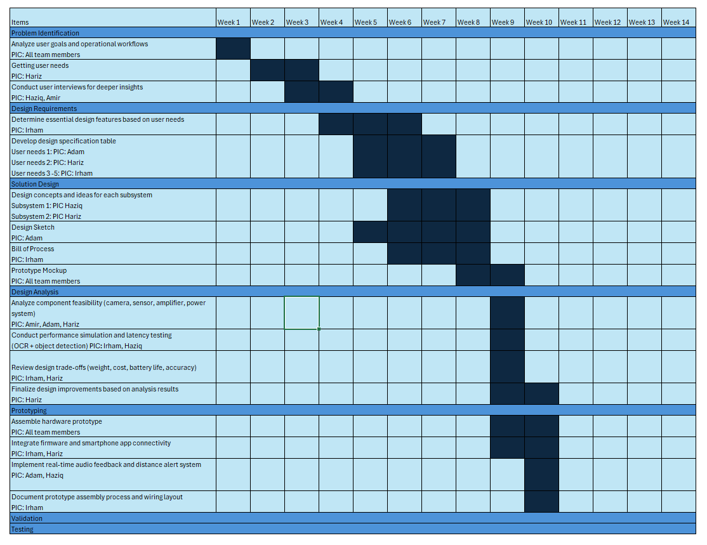
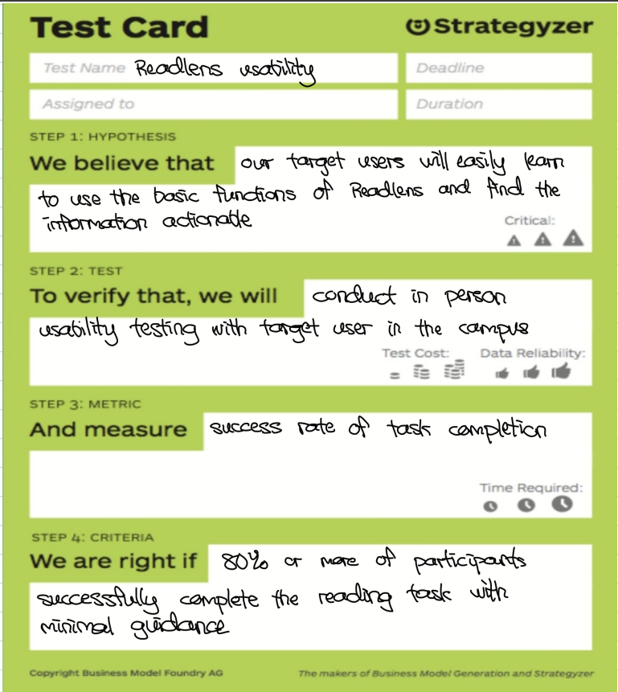
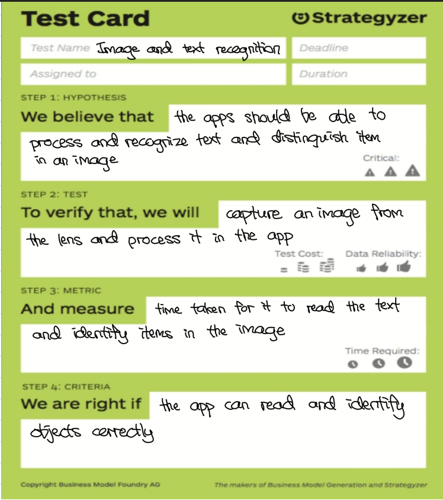

Engineering Design
System Architecture and Processes
Bill of Process
The manufacturing and assembly process is optimized for cost-efficiency while maintaining high reliability for the readlens smart glasses hardware.

System Flowchart
The logical flow of the system, from continuous environmental scanning via the camera module to data processing and alert activation. The system uses a microcontroller to analyze obstacle distances in real-time and capture images for AI text-recognition.

Project Timeline
Strategic milestones tracking the research, prototyping, and deployment phases of the readlens system.

Design Sketch
The wearable form factor is optimized for an unobtrusive, lightweight presence. It is designed to be comfortably worn by blind and myopic users for extended periods without causing physical strain, seamlessly integrating the camera and sensors.

Circuit Diagram
The hardware architecture leverages a robust ESP32-S3 microcontroller capable of local processing and Bluetooth communication, interconnected with the OV5640 camera sensor, distance sensors, and the PAM8403 audio amplifier module.

Test Cards
Performance validation using standard test cards.

